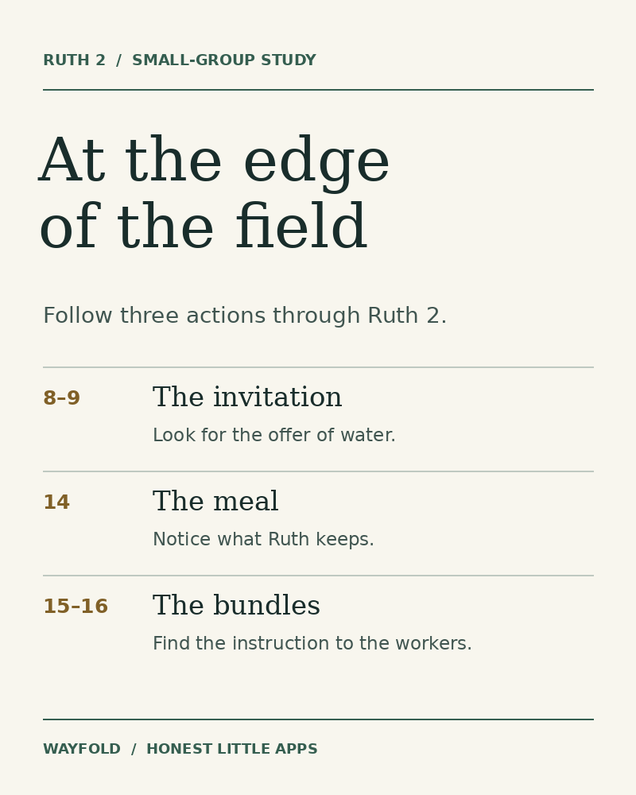

READ CLOSELY / POINT TO THE EVIDENCE
Did the text say that?
Or did you add it?
A reasonable guess is still a guess. Try six statements against one short passage and see which ones the words support.
This is original fictional practice text, not a Bible passage or paraphrase. It introduces a reading distinction before you apply it to scripture.
“The door was locked.”
OBSERVATION“She felt unwelcome.”
AN INFERENCEKeep the passage in view
Mara arrived at the workshop before noon carrying a blue notebook. The door was locked. She sat on the bench and read three pages. At noon, Eli opened the door and waved. Mara closed the notebook, thanked Eli, and went inside.
Original fictional passage written for this exercise.
MAKE THE RESULT USEFUL
Three labels, three different questions.
- Explicit: Can you point to words that directly say this?
- Inference: Are you adding an interpretation, motive or unstated detail? It might be plausible, but the passage alone does not settle it.
- Contradicted: Does a detail in the passage conflict with the statement?
When studying the Bible, this is only a starting distinction. Read the surrounding passage, consider genre and context, and separate your observation from the interpretation you want to explore. A short exercise cannot settle a theological question.
RUTH 2:8–18 · GROUP PRACTICE
What did Ruth carry home?
Read Ruth 2:8–18 with a Bible open. Boaz invites Ruth to eat. Later she takes food home to Naomi. Which details does the passage give, and which would a reader have to infer?
Three statements to test
For each statement, choose explicit, inference or contradicted. Write down a verse and the detail that supports your choice.
- Ruth had food left after she ate with the reapers.
- Ruth kept some food because she had already decided to share it with Naomi.
- Ruth finished gleaning before she ate with the reapers.
Check the three answers
- Explicit. Verse 14 tells us that Ruth ate, was satisfied and had food left over.
- Inference. Verse 18 tells us she shared the food. Neither verse 14 nor verse 18 gives her intention at the meal.
- Contradicted. Verse 15 has Ruth going back to glean after the meal, and verse 17 says she gleaned until evening.


A 20-minute group session
Download the Ruth 2 worksheet and leader notes (PDF, two pages)
Print page one for readers and keep page two for the leader. Everything needed to run the session also appears below.
Participant worksheet in text
Read the passage aloud. For each scene, record one action and the verse where you found it.
- Verses 8–9, the invitation. What does Boaz invite Ruth to do?
- Verse 14, the meal. What does Ruth keep after she eats?
- Verses 15–16, the bundles. What does Boaz tell the workers to leave?
- Verses 17–18, back home. Which two things does Ruth bring home? Which earlier detail helps explain one of them?
Compare answers with another reader. Which action changed Ruth’s work that day? Give one verse to support your reading.
Leader timing and verse guide
- 3 minutes · Read twice
- Read first for the story, then listen for who speaks to whom.
- 6 minutes · Mark the actions
- Give everyone quiet writing time before inviting one person to identify a verse.
- 7 minutes · Compare
- Ask what detail each reader noticed about the water, meal or bundles. Return to the passage together.
- 4 minutes · Follow the food home
- Read verses 17–18. Invite someone who has yet to speak to share what reaches Naomi.
Verse guide. In 8–9 Boaz invites Ruth to stay near his women workers and drink the water drawn by the workers. In 14 she eats with the reapers and has food left. In 15–16 he tells the workers to leave grain for her. In 17–18 she carries home the barley she gathered and gives Naomi food left over from the meal.
For the next session, read Wayfold’s four-session study of Ruth. Each chapter has its own questions, verse references and printable leader material.
THE NEXT STEP
Use the same evidence habit in a guided Bible study.
Wayfold pairs chapter studies with text-evidence questions and explanations. Its free content includes Ruth and Jonah studies, printable leader guides and a full World English Bible reader.
Get Wayfold on the App Store ↗The reader, search, read-aloud and free studies are available without a subscription. An optional one-time Premium Lifetime purchase adds more study books and features. Check the listing for current details.
Publisher disclosure: Honest Little Apps publishes Wayfold and this companion resource. This is not an independent review. App details checked November 4, 2026.

Useful for someone else?
Share the public guide. Your entries and results are not included.
Open the public guide link